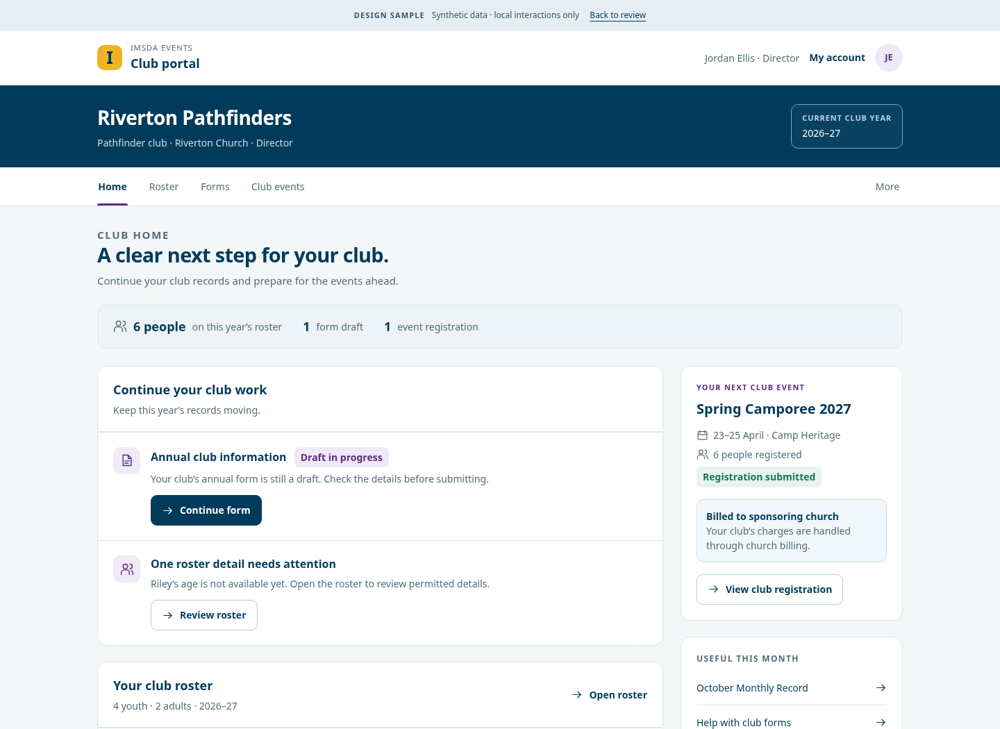
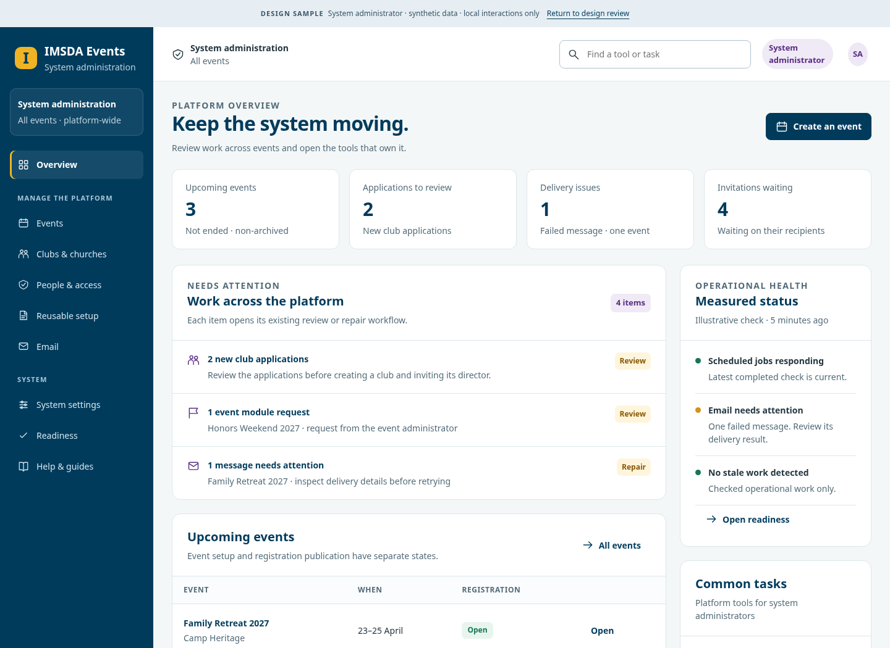

PLATFORM BRIEFING / OCTOBER 21, 2026
A clearer guide to
IMSDA Events
Current features. Practical help. Future possibilities.
Prepared for the IMSDA Events team
Repository baseline 5e367b7c · Editable briefing
CURRENT
HELP
FUTURE
HOW TO USE THIS DECK
Read every feature with its status
Implemented
Present in the repository. Confirm configuration and serving release before training on a live event.
Gated or needs setup
Code exists, but activation, credentials, approved scope or operational evidence is still required.
Accepted design
The visual direction is accepted. The production interface may still be awaiting implementation.
Later plan
An issue or proposal describes possible future work. Timing and decisions remain with the roadmap.
02 / 23
CURRENT FOUNDATION
A substantial event foundation already exists
Registration
Versioned forms, group/club flows, amendments, waitlists and private management links.
Money
Payments, refunds, adjustments, church invoices, sponsorship and reconciliation reports.
Event operations
Lodging, meal tickets, scanner imports, kitchen counts, assets and check-in.
Club ministry
Annual rosters, forms, Monthly Records, honors, orders and scoped portals.
Communication
Central Email, templates, announcements, schedules and reviewed audiences.
Public discovery
Event pages, public calendar, club finder, content and existing public links.
03 / 23
ROLE BOUNDARIES
One visual language. Four different jobs.
Attendee
Manage accessible registrations, profile and permitted next actions.
Director
Work within a selected club and club year, using the capabilities actually granted.
Area Coordinator
Review available clubs and reports, with narrow existing decision permissions.
System administrator
Manage the platform and deliberately enter an event for authorized work.
04 / 23
CURRENT FOUNDATION
Attendee help starts with the next action
What people can do
•
Register as a guest or use their account.
•
Return through an authorized account or private management link.
•
Review registration state, event information and permitted payment or change actions.
What help must explain
•
A waitlist request is different from a confirmed place.
•
Cancelled registrations remain part of history.
•
Payment, registration and check-in states mean different things.
05 / 23
CURRENT FOUNDATION
Directors work from club and year
Daily tasks
•
Maintain the authorized club roster and fix missing details.
•
Complete club forms and Monthly Records.
•
Choose people for events and manage permitted changes.
Keep these distinctions visible
•
Deputy, registrar and reporter have different capabilities.
•
Church-billed events belong to the sponsoring church’s invoice flow.
•
Birth dates and health information have separate access rules.
06 / 23
CURRENT FOUNDATION
Coordinators need oversight, not a director clone
Current oversight
•
Review clubs available to the role.
•
Follow Monthly Records, points and event participation.
•
Use existing scoped review paths, including the narrow Team approval exception.
Avoid misleading training
•
Do not imply an enforced area/ministry filter exists today.
•
Club and report views are generally read-only.
•
Event health information follows a separate permission and time-window contract.
07 / 23
CURRENT FOUNDATION
Administrator training should follow real work
Existing system responsibilities
•
Event and access administration.
•
Central Email and notification settings.
•
Calendar, directory, imports and operational readiness evidence.
Accepted design improves clarity
•
Explicit System versus Event context.
•
Action-first summaries with truthful count meanings.
•
Clear settings impact, dirty-edit recovery and task-based help.
08 / 23
CURRENT FOUNDATION
Form reuse has several distinct meanings
Event template
A starting configuration for an event; operational module data has its own ownership.
Form template
A copied form definition. Seeded versions exist; app-editable templates remain planned work.
Published form version
Each registration stays tied to the version it used. A draft change does not rewrite old answers.
Future saved questions
A separate copy-on-insert library proposal, with reference and permission details still owned by its issue.
09 / 23
CURRENT FOUNDATION
Operations depend on distinct records and states
Registration ≠ payment
A request, booking state and balance each answer a different question.
Check-in ≠ screening
Arrival uses the existing event eligibility and audited override rules.
Meals sold ≠ meals served
Scanner records, cancellations and kitchen-entered counts keep their own meaning.
Money report ≠ future ledger
Current financial records are the baseline; the general append-only ledger is later work.
10 / 23
USABILITY & ACCESSIBILITY
Accessibility has a useful existing foundation
Shared controls
Reusable labelled actions, dialogs, sortable tables and form validation.
Responsive work
Existing phone/card layouts and automated page/dialog/field audits.
Recovery patterns
Current dirty-navigation and error patterns can be applied consistently.
Evidence boundary
Source checks and automated layout tests do not certify keyboard, screen-reader or WCAG conformance.
11 / 23
OPEN USABILITY CORRECTIONS
Fix confusing behavior before adding more surface
Trustworthy links
Copy saved public URLs, not an unsaved slug. #1115
Truthful results
Describe the active sort and disclose the email recipient cap. #1116 / #1103
Recoverable edits
Protect unfinished roster, announcement and schedule work. #1101 / #1104
Complete discovery
Open the full crowded calendar day and explain finder/map coverage. #1117 / #1118
Lifecycle meaning
Align attendee amount-due and upcoming summaries. #1100
Intermediate widths
Resolve invitation-table overflow around 861px. #1045
12 / 23
ACCEPTED DESIGN / IMPLEMENTATION STILL OPEN
Accepted design is a reference, not a shipped screen
Director club/year workspace

System administrator workspace

13 / 23
PREPARED HELP & COMMUNICATION KIT
Help should answer a task in plain language
Included in the companion guide
•
Four role-specific quick starts.
•
Short FAQs and recovery explanations.
•
Support triage and task-oriented help copy.
Draft content stays honest
•
Editorial placeholders are not runtime template tokens.
•
Messages name the event, current state and permitted next action.
•
Future features are announced only after their actual availability is confirmed.
14 / 23
LATER ROADMAP / NO NEW DELIVERY COMMITMENTS
Future possibilities extend the foundation
Authoring & presentation
Editable form libraries, improved builder, saved views and versioned presentation.
Ministry expansion
Adventurer classes, awards and voluntary reviewed adoption after supplied materials.
Attendee convenience
Reviewed returning profiles, wallet passes and native access.
Operational depth
General sessions, volunteers, transportation, personnel, incidents and minor release.
Publishing & exchange
Full event sites, scoped APIs/webhooks and approved provider adapters.
Other business models
Installments, store balances, fundraising and other parent scopes remain separate.
15 / 23
SEPARATE CAMP DISCOVERY
A full youth-camp system needs more than events
Reusable IMSDA foundation
•
Registration and financial records.
•
Lodging inventory, meals and issued assets.
•
Club/guardian declarations, check-in and scoped communication.
Camp capabilities to establish
•
Camper/guardian authority and session enrollment depth.
•
Counselor supervision, cabins/bunks and daily activities.
•
Medication/treatment records, custody release, store allowances and camp outage procedures.
16 / 23
VENDOR DISCOVERY PACKET / NOT A LIVE INTEGRATION
What we need from UltraCamp
Operational walkthrough
How the camp actually handles a family, camper, session, cabin, activities and daily exceptions.
Data dictionary
Stable IDs, relationships, status meanings, history and changed/deleted-record behavior.
Supported access
Approved API/report/export methods, entitlement, limits and synthetic examples.
Protected boundaries
Health, medication, insurance, authority and retention capabilities require explicit approval.
Financial evidence
Balances, transactions, refunds, credits and processor reconciliation; no portable card secrets.
Written operating terms
Permitted use, vendor approval, ownership, support and an agreed continuity/exit method.
17 / 23
TECHNICAL HANDOFF
The code is a modular monolith
Pages & route handlers
Next.js entry points collect input and invoke server-side access and domain services.
Owning domain modules
Forms, registrations, access, finance, lodging, meals, honors and communication keep their boundaries.
Persistence & work queues
Prisma/PostgreSQL, immutable versions, audit records, private storage and email outbox.
External adapters
Payment/email/providers use defined adapters; provider payloads are not the core domain model.
18 / 23
ACTUAL GITHUB ACTIONS EVIDENCE
There is measured verification evidence
13,504
tests passed
1
test skipped
1,015
test files passed
Current main smoke passed: clean migrations, schema drift, seed, lint, typecheck and Vitest.
19 / 23
EVIDENCE LIMITS
Know what those checks do not prove
Additional recorded checks
•
Last application PR: extended real-DB/HTTP suites passed.
•
Mobile audit: 320 page/width combinations at 360 and 1024px passed.
•
Optional badge-print checks passed on that application revision.
Human & physical evidence
•
Serving release, production configuration and real key restore.
•
Screen-reader/keyboard usability and broader device/zoom testing.
•
Physical printer/label scans, provider activation and operational sign-off.
20 / 23
EXISTING REFERENCE LIBRARY
Build on the materials already in Git
Decisions & policy
Existing ADRs and the roadmap preserve authority, scope and approval history.
Rehearsal & release
Readiness reviews, event runbooks and physical print checks already cover operational preparation.
Imports & sample outputs
Existing JSON/CSV fixtures and sample registration PDFs show supported inputs and outputs.
Design references
Accepted role layouts and proposed public/list studies are published with clear ownership.
21 / 23
DOCUMENTATION HANDOFF
Use the pack for explanation and review
Feature guide
Explain what is implemented, gated, accepted as design and planned.
Usability review
Review concrete problems and their existing issue owners.
Help kit
Adapt role-specific guides and draft messages for the real audience.
Separate camp report
Prepare an informed camp-operator/UltraCamp discussion.
Technical evidence
Understand module ownership and the exact checks recorded.
Editable assets
Use the PowerPoint and Word copies; share the PDF companions.
22 / 23
REFERENCE APPENDIX
Source notes and further reading
Project authority
•
#98—ordered roadmap and current queue.
•
#844—comparison/backlog review index.
•
#1109 and #1073/#1074—accepted role and admin design.
•
#1062—form-builder stages and remaining review.
Companion evidence
•
Five source-linked documents explain details and limits.
•
Technical-check JSON preserves run IDs and revisions.
•
Camp sources distinguish dated research from vendor-confirmed access.
•
Speaker notes identify sources and status for each slide.
23 / 23